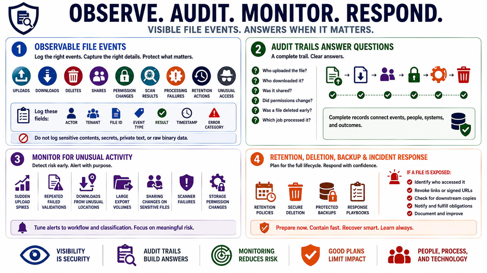

Logging, Monitoring, and Operational Controls
Connecting to LMS... Progress: in progress

Narration
Security-relevant file events should be observable. Useful logs often include uploads, downloads, deletes, shares, permission changes, scan results, processing failures, retention actions, and unusual access patterns. Logs should identify the actor, tenant, file identifier, event type, result, timestamp, and safe error category. They should not include sensitive file contents, secrets, full private document text, or raw binary data.
Audit trails help answer operational questions after a mistake or incident. Who uploaded the file. Who downloaded it. Was it shared. Did permissions change. Was a file deleted before its retention period. Which processing job touched it. These questions are difficult to answer if file events are logged only as generic web requests or if storage actions bypass the application entirely.
Monitoring should look for unusual file activity. Examples include sudden upload spikes, repeated failed validations, large export volumes, downloads from unusual locations, sharing changes on sensitive files, scanner failures, and storage permission changes. Alerting should be tuned to the workflow and data classification so teams see meaningful risk signals rather than a flood of routine activity.
Retention, deletion, backup, and incident response are part of secure file handling. Files should not remain forever by accident, and backups should be protected according to the sensitivity of the content they contain. If a file is exposed, teams need to know who accessed it, whether links or signed URLs must be revoked, whether downstream copies exist, and what notification or remediation obligations apply.